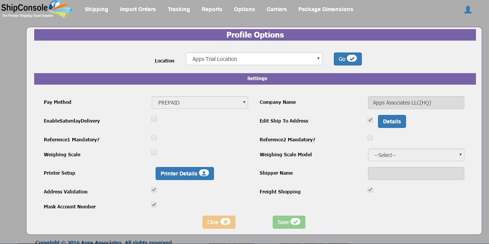
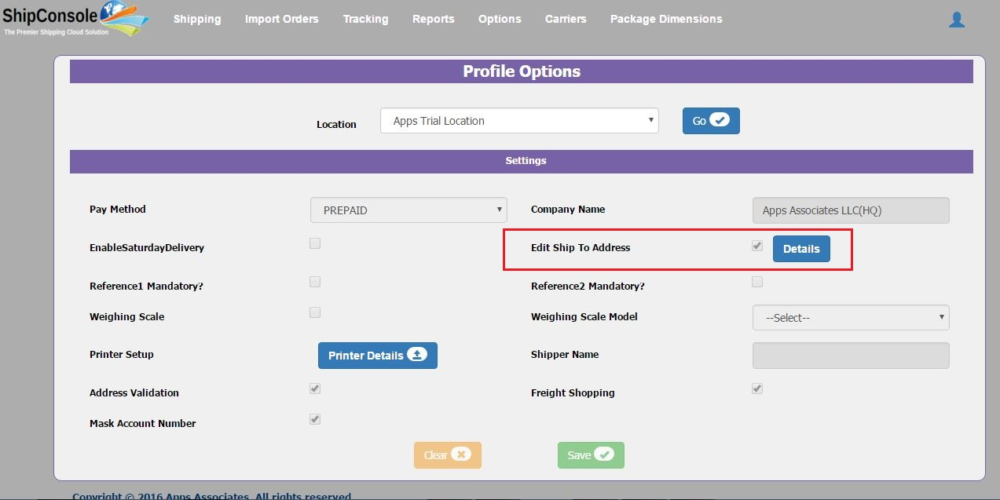
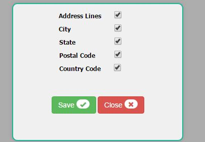

This Screen gives the ability to the shipping user to configure and customize the application from the client admin responsibility. Client Admin can setup general options, Company Details. The options are listed to the Client Admin users to change the behavior of the application. From other responsibilities, users does not have the permissions to change profile options as shown in Figure 5.1.

Figure 5.1
The shipping user can view different profile options for specific Location which are setup by the Client Admin as listed below briefly:
Pay Method |
To change carrier pay method in shipment page |
Company name |
Specifies the relevant Company Name. |
Enable Saturday Delivery |
Its related to shipping service and shipment reached date. If the delivery shipped on Saturday then it should be check. |
Reference1 Mandatory? |
Reference1 Value in shipments page will be mandatory if this checkbox is checked. |
Reference2 Mandatory? |
Reference2 Value in shipments page will be mandatory if this checkbox is checked. |
Address Validation |
If user wants to validate ship to address in Shipping page then needs to check this button. |
Freight Shopping |
If user wants to use Freight Shopping or Get Rates functionality then he needs to check this checkbox. |
Shipper Name |
This is required whenever user wants to ship using UPS ShipExec mode. |
Mask Account Number |
If user wants to restrict shipper to see account numbers then use has to check this check box then in shipping page account number will be masked |
Weighing Scale |
If shipper wants to use weight scale then we have to check the check box here |
Edit Ship To Address:
If 'Edit Ship To Address' check-box is unchecked by “Client Admin�, then customer name, address lines 1-3, city, state, postal code and country code will be non-editable(read-only mode) in shipment page.
Figure 5.2
If 'Edit Ship To Address' checkbox is checked by “Client Admin�, then when clicked on 'details' button, a popup will be opened shown in Figure 5.4.

Figure 5.3
Edit Ship To Details popup will displays all ship to address fields with its control(check box) in read-only mode to shipping user as shown below.

Figure 5.4
Based on the selected options , customer name, address lines 1-3, city, state, postal code and country code will be editable in shipment page.
Field |
Description |
Address Lines |
If Checked, allows to edit the Address Lines in the Shipment page. |
City |
If Checked, allows to edit the City in the Shipment page. |
State |
If Checked, allows to edit the State in the Shipment page. |
Postal Code |
If Checked, allows to edit the Postal Code in the Shipment page. |
Country Code |
If Checked, allows to edit the Country Code in the Shipment page. |
Note: Clear and Save buttons in profile options will be in disabled mode for shipping user.